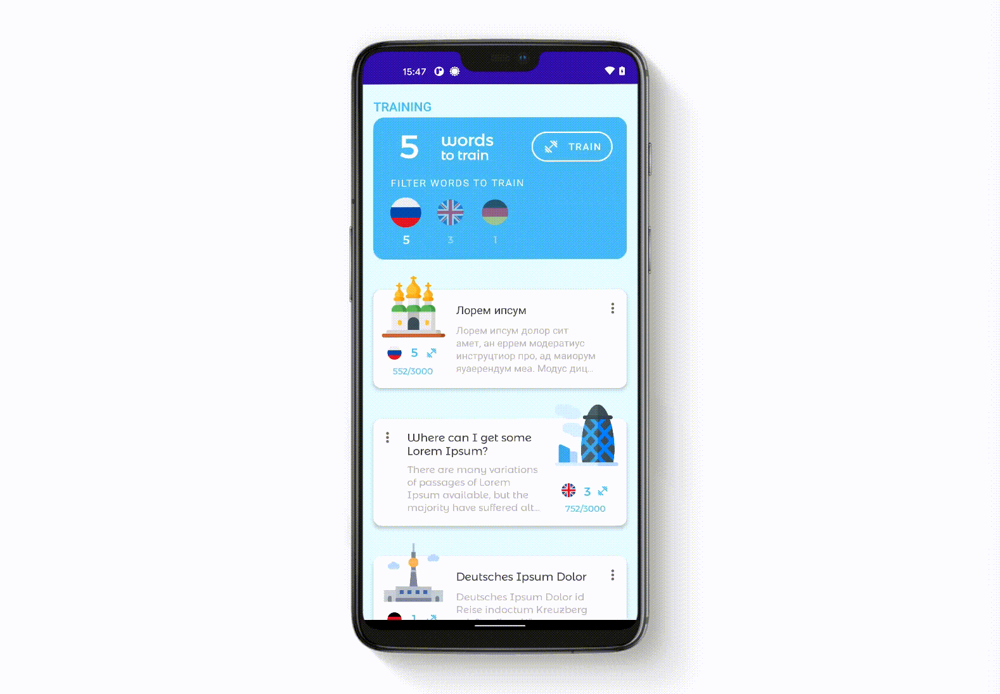
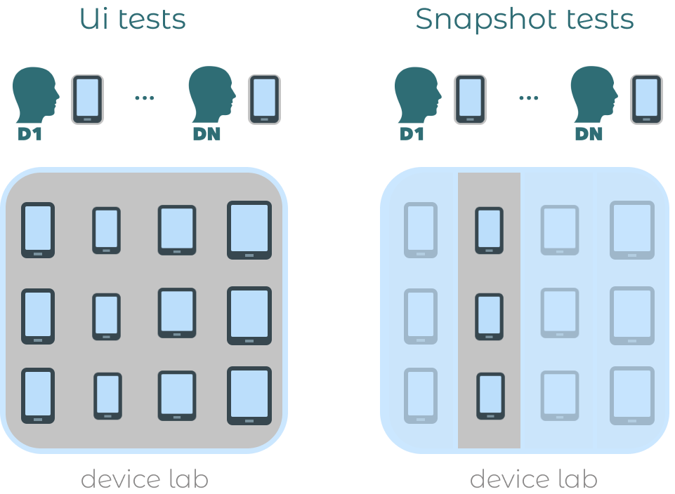

Ui testing or Screenshot testing?
It might be confusing to understand when to write UI test rather than Screenshot tests and vice versa. They do not replace each other. Their focus is different as previously mentioned. So let's imagine the following screen, which is a RecyclerView

What to UI test
A UI test would verify, e.g. that after deleting a row in the RecyclerView, that row is not displayed anymore. It would test WHAT is displayed after interacting with the view Therefore, write a Ui test if:
- You need to interact with one or more views
- You need to assert a certain behaviour after such interactions
- Navigation to another screen
- Visibility of some UI elements
You do not mind how pixel perfect every single UI element looks on the screen. You just care about the result of your interactions: WHAT is displayed instead of HOW it is displayed
What to Screenshot test
On the other hand, a snapshot test would verify HOW that row is displayed under numerous states and configurations: e.g. dark/light mode, LTR/RTL languages, different font sizes, wide/narrow screens... Therefore, write a Snapshot test if:
- you've made a visual change in an UI element
- you want to verify HOW that change is displayed under different configurations
In this case you are saving time to yourself and everybody involved in the QA process: nobody needs to play around with numerous settings/states to ensure everything looks pixel perfect. That process is cumbersome and you've automated it.
Up: Row when system font size set to huge Down: Row in dark mode
Use the right tool for the job
If you are new to Screenshot testing, don't fall into the trap of thinking that it can replace UI testing.
For our test case, we wanted to verify that after deleting a row in the RecyclerView, that row is not displayed anymore. If you had the test already written, it'd be as simple as replacing your view visibility assert with a snapshot one at the end of the test. However, keep in mind that this approach does not solve some common problems with UI testing:
-
Flakiness: Screenshot tests also come with flakiness, and even its own issues e.g. mind dates if displaying any (more about this later). As with UI tests, those problems can be mitigated though.
-
Speed:
- Fake Snapshot tests: Writing Screenshot tests that interact with views the same way as Ui tests, do not make them any faster. For that you need to write Screenshot tests that just inflate a view under a given state and snapshot it. This is what I call a fake Screenshot test: a Ui test disguised with a snapshot assert.
- Less-scalable test sharding: If you are using a cloud device service like Firebase test lab with test sharding to speed up the execution, it is not that simple. Snapshot file comparisons are done pixel by pixel. This means, all tests must run on the same device models across all parts involved (devs and CI) to ensure that the resolution, screen size and api create screenshots with identical pixels. This restricts a lot the speed wins of test sharding usually gained with such services. While all UI tests can be distributed among all devices, snapshot tests can only use a portion: those devices with the same config that developers use to record the snapshots. This is depicted below

Disclaimer
Test sharding allows to evenly split up the test suite into all connected devices. This enables to parallelize your tests. So if you have 300 tests and 30 devices, 10 tests run on every device in parallel, resulting in considerably lower test execution times.
Additionally, you will face the following new issues:
-
If still no Snapshot tests in place & planning to run Snapshot tests on emulators, dealing with them does not make things easier
- ensuring every part involved (i.e. developers and CI) has the same emulator config: snapshot assertions happen pixel by pixel.
- rendering issues due to hardware acceleration (also on physical devices)
- insufficient storage errors due to the space taken by the generated files, etc.
Actually, if you were using physical devices on the CI and move to emulators due to Snapshot testing, you'll additionally face the following troubles:
- freezing emulators on the CI
- synchronizing emulators start up before running the tests
-
Tests become brittle: they fail badly if altered in a seemingly minor way.
Let me explain the last point with an example.
Remember: we wanted to verify that after deleting a row in the RecyclerView, that row is not displayed anymore. We've written a Snapshot test for that.
Imagine you change how the row is displayed. If you verify the snapshot test, it will fail. You need to record a new snapshot including those changes on the row. The issue here is that the focus of your test was to verify that the deleted row is not displayed anymore. What does it have to do with changing the appearance of the row? You guessed it. Nothing. But the test fails because of that.
You do not want your test to fail for the wrong reason. You want them to be meaningful. You want them to have a purpose
I'd like to mention that you do not even need to change the appearance of the row intentionally. It's enough that your screen displays dates depending on the current time: the date changes on every run, making your "fake screenshot test" fail. Again, failing for the wrong reason.
Therefore, every subtle change on the screen will require to record a new snapshot, although that change had nothing to do with the initial intention of the test.
On the other hand, an UI test would have not failed since we would be asserting whether the deleted row was displayed or not. No visuals involved.
Conclusion
- Use both UI test and Snapshot tests, they complement each other. They aim to assert different things.
- Avoid fake snapshot tests, they usually add up troubles compared to UI tests rather than mitigating their issues.
- Use the right tool for the job: using Screenshot tests for testing interactions leads to brittle tests.
Further reading
Blog post
A more detailed blog post on this matter: UI tests vs. snapshot tests on Android: which one should I write? 🤔